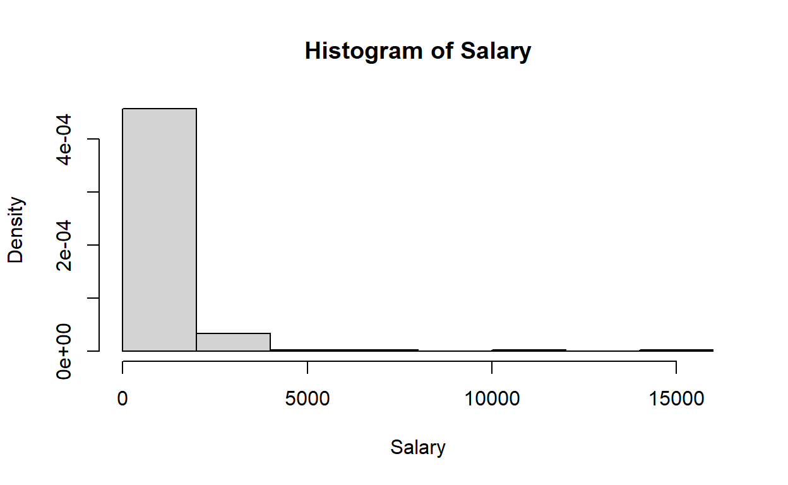
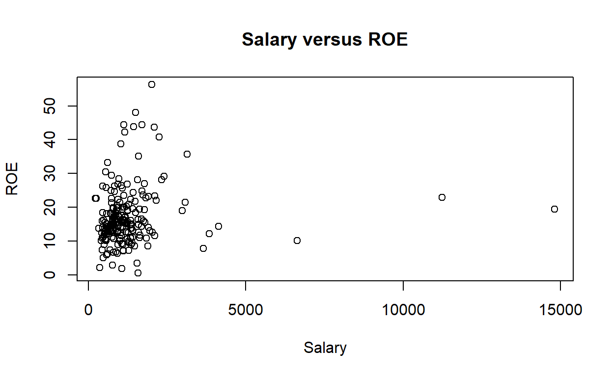
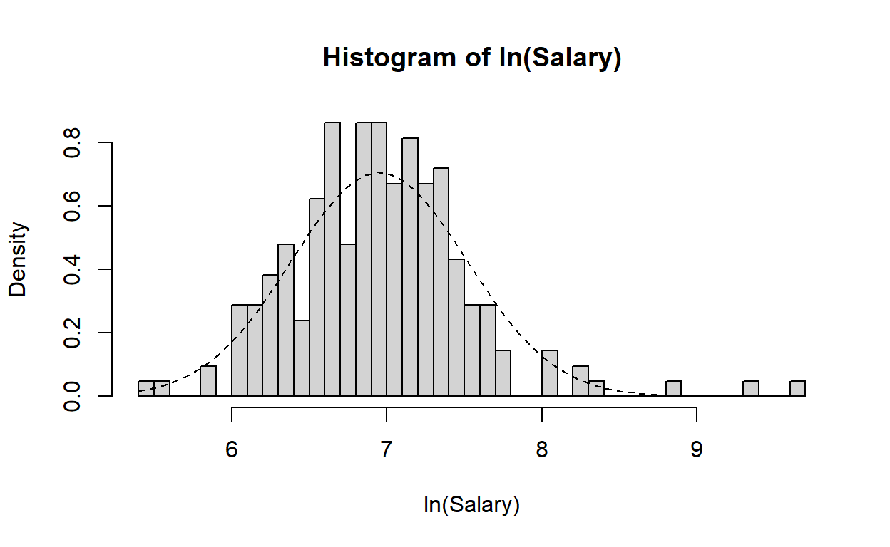
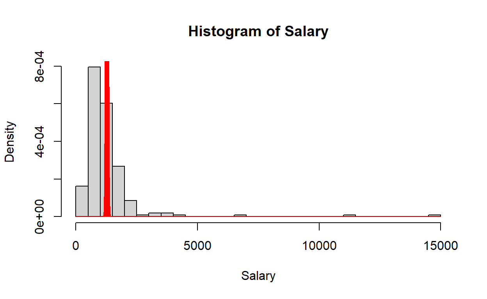

summary(ceosal1[ , which(names(...) %in% c('...', '...', '...', '...'))])summary(ceosal1[ , which(names(ceosal1) %in% c('salary', 'sales', 'roe', 'ros'))])R handles factors much more intuitively than Stata (the original source of the data). The factor() function will create a factor from a variable from a variable with discrete values, but it can help (or not) to break the process into separate steps first.
indus, finance,
consprod, and utility) into a matrix,
A.factor() to the cross-multiplication of
A and f (%*%) with the
labels option set as a character vector taking the names of
the four individual industry indicators.This approach is only a suggestion (and one that might help you “see” what you’re doing to construct the new variable). As you might expect, there are multiple ways to get this result, and you can even achieve the end result in one line of code if you are a little clever.
# Create a factor variable for the industry
# Summarize it with `summary()`
summary(ceosal1$industry)# Don't forget to include the data frame when you call each variable, e.g. ceosal1$finance.
A <- cbind(..., ..., ..., ...)
f <- c(1:...)
industry <- ...
ceosal1$industry <- factor(..., labels = ...)
summary(ceosal1$industry)A <- cbind(ceosal1$indus, ceosal1$finance, ceosal1$consprod, ceosal1$utility)
f <- c(1:ncol(A))
ceosal1$industry <- factor(A %*% f, labels = c('indus', 'finance', 'consprod', 'utility'))
summary(ceosal1$industry)Now, summarize your entire dataset by industry, and exclude the following:
The four individual-industry indicator variables (use the factor variable from the previous step instead).
The log of salary and the log of sales.
Use two places after the decimal place for all continuous variables.
# Use column indexing with "which(names()%in%...)" like you did before, but use NEGATION, i.e. "-which(names()%in%...)."
tbl_summary(ceosal1[, c(...)])tbl_summary(ceosal1[, -which(names(ceosal1) %in% c('indus', 'finance', 'consprod', 'utility', 'lsalary', 'lsales'))], by = industry, statistic = list(all_continuous() ~ '{mean} ({sd})'), digits = list(all_continuous() ~ c(2,2)))Calculate the correlation matrix among only salary, sales, roe, and ros.
# Use which(names() %in% ...) to identify a string vector of variable names.
cor(...[ , which(names(...) %in% c('...', '...', '...', '...'))])cor(ceosal1[ , which(names(ceosal1) %in% c('salary', 'sales', 'roe', 'ros'))])If we want to make it look cleaner, we can set the color to black using the color.regions function and the colorRampPalette() function. Do this for the numerical correlation matrix for the ceosal1 data that we started in class by adding the appropriate option(s).
corrgram(ceosal1, panel = panel.cor)corrgram(ceosal1, panel = panel.cor, col.regions = colorRampPalette(...))corrgram(ceosal1, panel = panel.cor, col.regions = colorRampPalette(c('black'))) # The margin option helps you specify which variable to condition the proportions on.
prop.table(table(..., ...))
prop.table(table(..., ...))prop.table(table(affairs$marriage,affairs$haskids), margin = 1)
prop.table(table(affairs$marriage,affairs$haskids), margin = 2)## function (check_env)
## {
## if (is.list(check_env)) {
## check_env <- list2env(check_env)
## }
## user_code <- check_env$.user_code
## if (is.null(user_code)) {
## return(legacy_graded(correct = FALSE, message = "I didn't receive your code. Did you write any?"))
## }
## solution_code_all <- check_env$.solution_code_all
## if (is.null(solution_code_all) || length(str2expression(solution_code_all)) ==
## 0) {
## solution_code_all <- solutions_prepare(check_env$.solution_code)
## }
## if (is.null(solution_code_all) || length(str2expression(solution_code_all)) ==
## 0) {
## return(legacy_graded(correct = FALSE, message = "No exercise solution provided. Defaulting to _incorrect_."))
## }
## message <- code_feedback(user_code = user_code, solution_code = solution_code_all,
## env = check_env, allow_partial_matching = allow_partial_matching)
## if (is.null(message)) {
## return(legacy_graded(correct = TRUE, message = glue_message(glue_correct %||%
## gradethis_legacy_options$gradethis.glue_correct,
## .is_correct = TRUE, .message = NULL, .correct = correct,
## .user_code = user_code)))
## }
## message <- glue_message(glue_incorrect %||% gradethis_legacy_options$gradethis.glue_incorrect,
## .is_correct = FALSE, .message = message, .incorrect = incorrect,
## .user_code = user_code)
## legacy_graded(correct = FALSE, message = message)
## }
## <bytecode: 0x0000018ee3a843f8>
## <environment: 0x0000018ee3a89720># Typical statistic options are "{n}" (default), "{p}%", or "{n}, ({p}%)".
# Typical percent options are "none" (default), "column", "row", or "cell".
tbl_cross(..., row = ..., col = ..., statistic = '...', percent = '...')tbl_cross(affairs, row = marriage, col = haskids)
tbl_cross(affairs, row = marriage, col = haskids, statistic = "{p}%")
tbl_cross(affairs, row = marriage, col = haskids, percent = 'cell')Add the following to your plots from the in-class examples:
Make sure your plots have descriptive (English) titles: “Histogram of Salary,” “Salary versus ROE,” “Salary,” and “ROE.”
hist(ceosal1$salary, main = "Histogram of Salary", xlab = "Salary", probability = TRUE)
# Add your normal curve here.
plot(ceosal1$salary, ceosal1$roe, main = "Salary versus ROE", xlab = "Salary", ylab = "ROE")
# Add your vertical lines here. hist(..., main = "...", xlab = "...")
curve(dnorm(...), add = ...)
plot(ceosal1$salary, ..., main = "...", xlab = "...", ylab = "...")
abline(h = mean(ceosal1$roe), lty = "dotted")
abline(v = mean(ceosal1$salary), lty = "dotted")hist(ceosal1$salary, breaks = 30, main = "Histogram of Salary", xlab = "Salary", freq = FALSE)
curve(dnorm(x, mean(ceosal1$salary), sd(ceosal1$salary)), lty = "dashed", add = TRUE)
plot(ceosal1$salary, ceosal1$roe, main = "Salary versus ROE", xlab = "Salary", ylab = "ROE")
abline(h = mean(ceosal1$roe), lty = "dotted")
abline(v = mean(ceosal1$salary), lty = "dotted")As you can see, CEO salaries are very abnormal! WWWD (what-would-Wooldridge-do)? Take the logs?

Try Poisson distribution?

To really up your game with pairs of variables, you can put everything in a corrgram() plot. Did you notice how the upper-right triangular half of the correlation matrix is the same as the lower-left? What if we could put coefficients in the upper half, scatterplots in the lower half, and histograms (almost) down the diagonal? Let’s do that! (And keep the fonts black, please!)
corrgram(ceosal1,
upper.panel = ...,
lower.panel = ...,
diag.panel = ...,
col.regions = ...) corrgram(ceosal1,
upper.panel = panel.cor,
lower.panel = panel.pts,
diag.panel = panel.density,
col.regions = colorRampPalette(c('black'))) This uses the built-in ‘panel.density’ option to approximate the distribution of the x’s. For a ‘true’ histogram, we would have to specify our own function, panel.hist. We can also specify functions to add a regression line, or fancy “spline” fits.
# Create a user-defined function, panel.hist, to make a histogram along the diagonals.
panel.hist <- function(x, ...) {
usr <- par("usr")
on.exit(par(usr))
par(usr = c(usr[1:2], 0, 1.5))
his <- hist(x, plot = FALSE, breaks = 30)
breaks <- his$breaks
nB <- length(breaks)
y <- his$counts
y <- y/max(y)
rect(breaks[-nB], 0, breaks[-1], y, col = rgb(0, 1, 1, alpha = 0.5), ...)
}
# Create a user-defined function, panel.lm, to add a quick regression line to a panel.plot.
panel.lm <- function (x, y, corr = NULL, col.regions, cor.method, ...) {
if (!is.null(corr))
return()
plot.xy(xy.coords(x, y), type = "p", ...)
abline(lm(y ~ x)) # The lm command runs a simple linear regression.
}
# Create a user-defined function, panel.spline, to add a fancy kinked linear spline to a panel.plot.
panel.spline <- function (x, y, corr = NULL, col.regions, cor.method, ...) {
if (!is.null(corr))
return()
plot.xy(xy.coords(x, y), type = "p", ...)
lines(smooth.spline(x, y), type = 'l')
}
corrgram(ceosal1[, -which(names(ceosal1) %in%
c('indus', 'finance', 'consprod', 'utility', 'lsalary', 'lsales'))],
upper.panel = panel.cor,
lower.panel = panel.lm,
diag.panel = panel.hist,
text.panel = NULL,
cex.cor = 4, # This line gives an error, but does what you want!
outer.labels = list(top = list(names(ceosal1), cex = 1.25, srt = 30),
left = list(names(ceosal1), cex = 1.25, srt = 30)),
col.regions = colorRampPalette(c('black')))